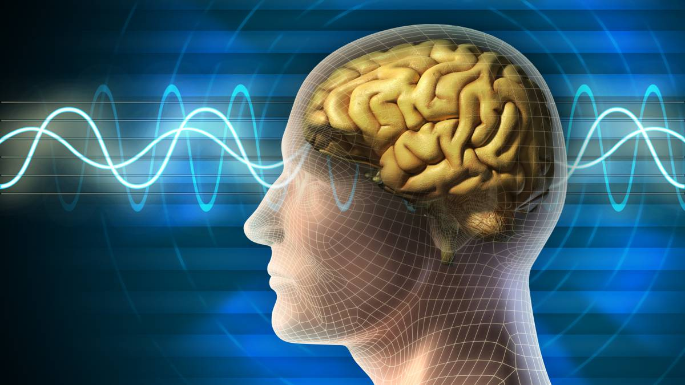

Enfermedad mental, también denominada "trastorno de salud mental", se refiere a una amplia gama de afecciones de
la salud mental, es decir, trastornos que afectan el estado de ánimo, el pensamiento y el comportamiento. Son
ejemplos de enfermedad mental la depresión, los trastornos de ansiedad, los trastornos de la alimentación y los
comportamientos adictivos.
Muchas personas manifiestan problemas de salud mental de vez en cuando. Pero un problema de salud mental se
convierte en una enfermedad mental cuando los signos y los síntomas se hacen permanentes, causan estrés y
afectan la capacidad de funcionar normalmente.
La enfermedad mental puede hacerte sentir muy mal y ocasionar problemas en la vida cotidiana, por ejemplo, en la
escuela, el trabajo o en las relaciones interpersonales. En la mayor parte de los casos, los síntomas pueden
tratarse con una combinación de medicamentos y terapia de conversación (psicoterapia).

Existen distintos tipos de enfermedades mentales, entre estas podemos destacar
las siguientes:
Trastornos del estado de ánimo:
Su principal característica es que afectan a la persona emocionalmente y suponen una alteración del humor.
Un ejemplo es el trastorno bipolar, que combina períodos de mucha exaltación (maníacos) con otros de total
abatimiento (depresivos). La duración de cada fase varía en cada persona, y se alternan con otros períodos
en los que el estado de ánimo se normaliza y los síntomas de la enfermedad desaparecen prácticamente por
completo.
Los trastornos depresivos son otro tipo de trastornos del estado de ánimo, que presentan síntomas como la
tristeza, la desesperanza y la inhibición.
Trastornos de ansiedad:
Son trastornos en los que predominan el miedo y la inseguridad, y se caracterizan por la anticipación de un
futuro peligro o desgracia acompañados de un sentimiento incómodo.
Algunos ejemplos son el trastorno de pánico, el trastorno obsesivo-compulsivo, las fobias y el trastorno de
estrés post-traumático.
Trastornos relacionados con sustancias:
Estos incluyen problemas asociados con el abuso del alcohol y las drogas ilegales o legales. Los síntomas
más habituales son cambios en el comportamiento (alteraciones en el apetito o en el sueño, disminución del
rendimiento escolar o laboral, falta de motivación…), cambios físicos (pérdida o incremento de peso
repentinos, deterioro en el aspecto físico, temblores…) y cambios sociales (cambio de amigos, problemas
legales, necesidad de dinero…).
Son los conocidos como trastornos de separación de la realidad:
(delirios).
El ejemplo más notable es la esquizofrenia, cuya característica principal es que la persona experimenta una
grave distorsión entre sus pensamientos y emociones. Es frecuente que oiga o vea cosas que no existen, se
aísle de su entorno, descuide su aspecto, sus quehaceres o crea cosas que no son verdad.
Trastornos de personalidad:
Estos trastornos se caracterizan porque la persona presenta una forma de sentir y de comportarse que se
aparta mucho de lo socialmente aceptado, como pueden ser conductas violentas, inestabilidad o grandes
dificultades para relacionarse.
Ejemplos de estos trastornos son el trastorno límite de personalidad y el trastorno antisocial de la
personalidad.
Otros trastornos:
Otras enfermedades mentales son los trastornos del sueño, trastornos sexuales, trastornos de la conducta
alimentaria, trastornos del control de los impulsos, etc.
También existen los trastornos disociativos (en los que se altera el sentido de sí mismo), los trastornos
somatomorfos (en los que hay síntomas físicos sin causa clara) o los trastornos del desarrollo (que
comienzan en la infancia, la niñez o la adolescencia, como por ejemplo el déficit de atención, el trastorno
del comportamiento, etc.).